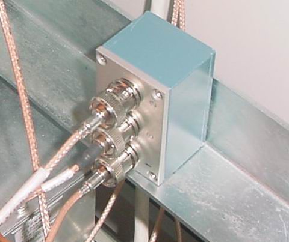

Operating Documentation
Direction 5440001-3, Rev# 6
Signa HDxt Service Methods
Module Version 1.0, Version Date 4/26/07
Operating Documentation |
| Required Persons | Preliminary Reqs | Procedure | Finalization |
|---|---|---|---|
| 1 | Not Applicable | 15 mins | Not Applicable |
Make sure scanner is IDLE by checking the scan desktop and seeing IDLE in scan square (not prescan or scanning).
Remove 3 BNC cables connected to UTNS RF Splitter in back of Systems or RFS cabinet. Note location (1, 2, 3 of cable connections). See Illustration 1.
Illustration 1: UTNS RF Splitter

Remove tiewraps connecting UTNS RF Splitter to cabinet.
Attach 3 BNC cables to new UTNS RF Splitter and tiewrap to cabinet.
Reset TPS
Run a head or body scan to make sure the system is operational.